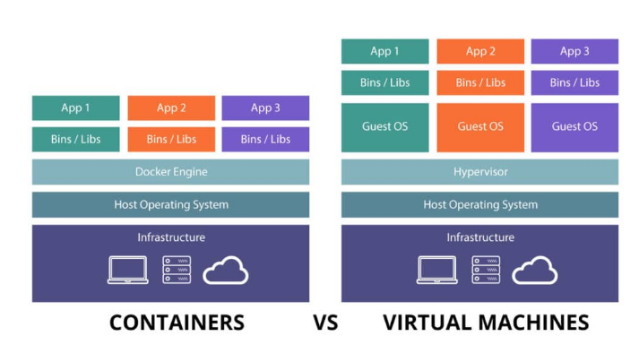

Virtualization-vs-Containerization have their own benefits Virtualization came into market before Containers. Developers heavily rely on these technologies for easy deployment and can have different OS running in these technologies. There is a whole lot of difference between them as Virtualization being old technology and Container being new technology have their own benefits. Virtualization relies on both Host OS and Guest OS whereas Container relies on Host OS and Container Engine for example if docker is installed then it would be Docker Engine. The image below describes that Virtualization is a bit heavy due to this the resources ends up being used quickly and for Container being light is due to scalability and it shares its resources. As for virtualization the application might have to be deleted as no new application can be installed.

Image Source: Click here
As per the conclusion Container runs on a setup similar to VMs but on Host OS lays a runtime engine instead of hypervisor. So if you docker it would be called docker engine. Containers are lightweight so deploying out multiple containers would be easy since we don’t have to worry about guest OS. We just have libraries and application itself. We can scale that out three times as we don’t have to duplicate all those OS dependencies and create bloated VMs we end up using fewer resources.